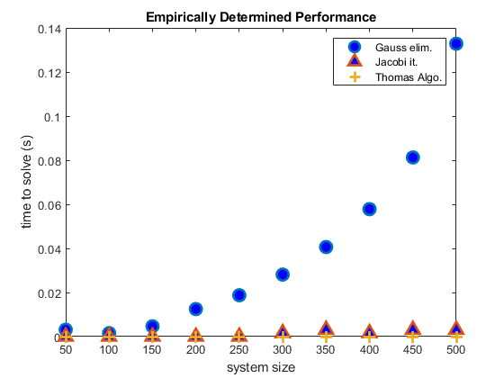
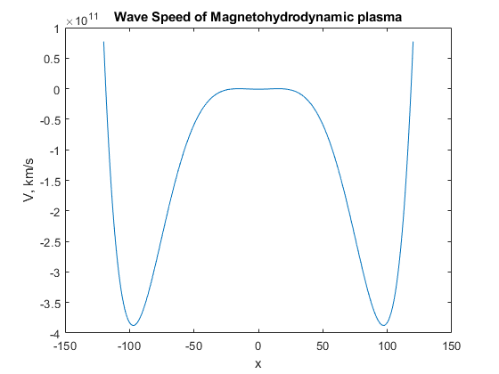

Contents
Introduction
%Aldous George %EP 501 %Midterm Exam %This code contains excerpts from codes provided by Dr. Zettergen. %https://github.com/Zettergren-Courses/EP501_matlab clc clearvars close all
Problem 1
load('iterative_testproblem.mat') x = tridiag(Ait,bit); disp('Tridiagonal Matrix Algorithm/Thomas Algorithm') disp(x); disp('MATLAB built-in solution'); disp(Ait\bit);
Tridiagonal Matrix Algorithm/Thomas Algorithm
0.0329
0.1316
0.2400
0.3375
0.4142
0.4642
0.4839
0.4720
0.4293
0.3584
0.2641
0.1526
0.0310
-0.0926
-0.2101
-0.3138
-0.3971
-0.4544
-0.4819
-0.4780
-0.4427
-0.3785
-0.2896
-0.1817
-0.0619
0.0619
0.1817
0.2896
0.3785
0.4427
0.4780
0.4819
0.4544
0.3971
0.3138
0.2101
0.0926
-0.0310
-0.1526
-0.2641
-0.3584
-0.4293
-0.4720
-0.4839
-0.4642
-0.4142
-0.3375
-0.2400
-0.1316
-0.0329
MATLAB built-in solution
0.0329
0.1316
0.2400
0.3375
0.4142
0.4642
0.4839
0.4720
0.4293
0.3584
0.2641
0.1526
0.0310
-0.0926
-0.2101
-0.3138
-0.3971
-0.4544
-0.4819
-0.4780
-0.4427
-0.3785
-0.2896
-0.1817
-0.0619
0.0619
0.1817
0.2896
0.3785
0.4427
0.4780
0.4819
0.4544
0.3971
0.3138
0.2101
0.0926
-0.0310
-0.1526
-0.2641
-0.3584
-0.4293
-0.4720
-0.4839
-0.4642
-0.4142
-0.3375
-0.2400
-0.1316
-0.0329
Problem 1 - Benchmark
Evaluate performance and scaling of Gaussian elimination and Jacobi iteration by solving systems of different size and timing the solves
nvals=50:50:500; testtimes=zeros(size(nvals)); lrep=10; %how many times to repeat each test disp('Start of tests of Gaussian-elimination scaling'); for in=1:numel(nvals) nlarge=nvals(in); Blarge=diag(-1*ones(nlarge-1,1),-1)+diag(-1*ones(nlarge-1,1),1)+diag(4*ones(nlarge,1),0); %this must be diagonally dominant or else the method won't converge blarge=ones(nlarge,1); for irep=1:lrep %benchmark will repeat the same solution several times to eliminate random variations from CPU load, etc. tstart=cputime; [Blargemod,ordlarge]=Gauss_elim(Blarge,blarge); xlarge=backsub(Blargemod(ordlarge,:)); tend=cputime; testtimesG(in)=testtimes(in)+(tend-tstart)/lrep; end %for disp([' GE solution for system of size ',num2str(nlarge),' takes average time ',num2str(testtimesG(in)),' s']); end %for figure(1); plot(nvals,testtimesG,'o','LineWidth',2,'MarkerSize',10,'MarkerFaceColor','blue') xlabel('system size'); ylabel('time to solve (s)'); title('Empirically Determined Performance'); disp('Start of tests for Jacobi iteration'); tol=1e-9; testtimes=zeros(size(nvals)); for in=1:numel(nvals) nlarge=nvals(in); Blarge=diag(-1*ones(nlarge-1,1),-1)+diag(-1*ones(nlarge-1,1),1)+diag(4*ones(nlarge,1),0); %this must be diagonally dominant or else the method won't converge blarge=ones(nlarge,1); for irep=1:lrep %benchmark will repeat the same solution several times to eliminate random variations from CPU load, etc. tstart=cputime; x0=randn(nlarge,1); [xit,iterations]=Jacobi(x0,Blarge,blarge,tol,false); tend=cputime; testtimesJ(in)=testtimes(in)+(tend-tstart)/lrep; end %for disp([' JI solution for system of size ',num2str(nlarge),' takes average time ',num2str(testtimesJ(in)),' s']); end %for figure(1); hold on plot(nvals,testtimesJ,'^','LineWidth',2,'MarkerSize',10,'MarkerFaceColor','blue') xlabel('system size'); ylabel('time to solve (s)'); title('Empirically Determined Performance'); disp('Start of tests for Thomas Algorithm'); testtimes=zeros(size(nvals)); for in=1:numel(nvals) nlarge=nvals(in); Blarge=diag(-1*ones(nlarge-1,1),-1)+diag(-1*ones(nlarge-1,1),1)+diag(4*ones(nlarge,1),0); %this must be diagonally dominant or else the method won't converge blarge=ones(nlarge,1); for irep=1:lrep %benchmark will repeat the same solution several times to eliminate random variations from CPU load, etc. tstart=cputime; [x]=tridiag(Blarge,blarge); tend=cputime; testtimesT(in)=testtimes(in)+(tend-tstart)/lrep; end %for disp([' TA solution for system of size ',num2str(nlarge),' takes average time ',num2str(testtimesT(in)),' s']); end %for figure(1); hold on plot(nvals,testtimesT,'+','LineWidth',2,'MarkerSize',10,'MarkerFaceColor','blue') xlabel('system size'); ylabel('time to solve (s)'); legend('Gauss elim.','Jacobi it.', 'Thomas Algo.') fprintf('\n'); title('Empirically Determined Performance');
Start of tests of Gaussian-elimination scaling GE solution for system of size 50 takes average time 0.003125 s GE solution for system of size 100 takes average time 0.0015625 s GE solution for system of size 150 takes average time 0.0046875 s GE solution for system of size 200 takes average time 0.0125 s GE solution for system of size 250 takes average time 0.01875 s GE solution for system of size 300 takes average time 0.028125 s GE solution for system of size 350 takes average time 0.040625 s GE solution for system of size 400 takes average time 0.057813 s GE solution for system of size 450 takes average time 0.08125 s GE solution for system of size 500 takes average time 0.13281 s Start of tests for Jacobi iteration JI solution for system of size 50 takes average time 0 s JI solution for system of size 100 takes average time 0 s JI solution for system of size 150 takes average time 0 s JI solution for system of size 200 takes average time 0 s JI solution for system of size 250 takes average time 0 s JI solution for system of size 300 takes average time 0.0015625 s JI solution for system of size 350 takes average time 0.003125 s JI solution for system of size 400 takes average time 0.0015625 s JI solution for system of size 450 takes average time 0.003125 s JI solution for system of size 500 takes average time 0.003125 s Start of tests for Thomas Algorithm TA solution for system of size 50 takes average time 0 s TA solution for system of size 100 takes average time 0 s TA solution for system of size 150 takes average time 0 s TA solution for system of size 200 takes average time 0 s TA solution for system of size 250 takes average time 0 s TA solution for system of size 300 takes average time 0 s TA solution for system of size 350 takes average time 0 s TA solution for system of size 400 takes average time 0 s TA solution for system of size 450 takes average time 0 s TA solution for system of size 500 takes average time 0 s
Problem 2
disp('Problem 2'); %Initialisation gamma=5/3; rho=1.67*10^(-21); %kg/m^3 p=1.38*10^(-11); %Pa B=10^(-9); %[T] mu0=4*pi*10^(-7); maxit=100; tol=1e-4; verbose=false; x=linspace(-120,120,100000); Cs=sqrt((gamma*p)/(rho)); %m/s Ca=sqrt(B^2/(mu0*rho)); %m/s Cs=Cs*10^(-3); %km/s Ca=Ca*10^(-3); %km/s disp(['Sound Speed: ', num2str(Cs), ' km/s']); disp(['Alfen speed: ', num2str(Ca), ' km/s']); f=@objfun2; %f function fprime=@objfun2prime; ygrid=f(x); %Y for graph figure(2) plot(x,ygrid); title('Wave Speed of Magnetohydrodynamic plasma'); xlabel('x'); ylabel('V, km/s'); x0=200; [root(1),it,success]=newton_exact(f,fprime,x0,maxit,tol,verbose); x0=-200; [root(2),it,success]=newton_exact(f,fprime,x0,maxit,tol,verbose); disp(['roots: ', num2str(root)]);
Problem 2 Sound Speed: 117.3561 km/s Alfen speed: 21.8292 km/s roots: 118.3843 -118.3843
Problem 3
disp('Problem 3'); %3-a) disp('3-a)'); % ax^2 + bx + c = 0 %example problem A=[2;-6;4]; x=quadratic(A); disp('Solutions for 2.x^2 - 6.x + 4 = 0'); disp(x); %3-b) disp('3-b)'); %Example % A = x^5 - 15x^4 + 85x^3 - 225x^2 + 274x -120 = 0 % B = (x-5) A= [1 -15 85 -225 274 -120]; B= 5; [b,R]=SynthDiv(A,B); % 3-c) disp('3-c)'); %initialisation f=@objfun3; maxit=100; tol=1e-10; verbose=false; x0=1; x0i1=0.5; %Root of Polynomial of order 5 [r,it,success]=newton_approx(A,x0,x0i1,maxit,tol,verbose); disp('First root of the polynomial: '); disp(r); %3-d) disp('3-d)'); A= [1 -15 85 -225 274 -120]; B= 1; %Deflation to Polynomial of order 4 [b2,R]=SynthDiv(A,B); disp('Polynomial of order 4: ') fprintf('(%.0fx^4) + (%.0fx^3) + (%.0fx^2) + (%.0fx) + (%.0f) =0\n\n', b2(1),b2(2), b2(3), b2(4), b2(5)); %3-e) disp('3-e)'); %Deflation to quadtric polynomial for i=1:3 %Finding a root of the polynomial [r(i),it,success]=newton_approx(A,x0,x0i1,maxit,tol,verbose); %Deflation to Polynomial of lower order [A,R]=SynthDiv(A,r(i)); end x=quadratic(A); r=cat(2,r,x); disp('Roots of the 5th order Polynomial: '); disp(r);
Problem 3
3-a)
Solutions for 2.x^2 - 6.x + 4 = 0
2 1
3-b)
3-c)
First root of the polynomial:
1
3-d)
Polynomial of order 4:
(1x^4) + (-14x^3) + (71x^2) + (-154x) + (120) =0
3-e)
Roots of the 5th order Polynomial:
1.0000 2.0000 3.0000 5.0000 4.0000